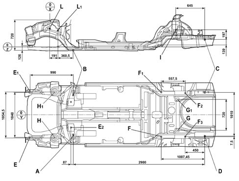

UNDERBODY MEASUREMENTS
- Path
- Descriptions > 72 panels and frames > UNDERBODY MEASUREMENTS
- Kind
- system description
- Applies to
- all engines; all production periods
- Interactive page
- https://sloeber94.github.io/elrnDB-lThss/en/#/385491
Applies to: all engines; all production periods

- A - Chassis reference opening X=490, Y=460, Z=-84
- B - Chassis reference opening X=490, Y=460, Z=-84
- C - Chassis reference opening X=3470, Y=520, Z=189
- D - Chassis reference opening X=3470, Y=490 Z=189
- E - Front engine frame fastening X=-500, Y=-520, Z=41.8
- E1 - Front engine frame fastening X=-500, Y=520, Z=41.8
- E2 - Front engine frame fastening X=403, Y=±315, Z=46.7
- F - Rear suspension axle fastening (front section) X=2462.5, Y=-524, Z=51.8
- F1 - Rear suspension axle fastening (front section) X=2462.5, Y=524, Z=51.8
- F2 - Rear suspension axle fastening (rear section) X=3030, Y=-497.5, Z=181
- F3 - Rear suspension axle fastening (rear section) X=3020, Y=497.5, Z=181
- G - Rear side member rear crossmember beam X=2845, Y=-360, Z=177
- G1 - Rear side member rear crossmember beam X=2845, Y=360, Z=177
- L - Right front front suspension arm attachment lower front bushes: X=-61.6, Y=476.5, Z=418.8 left: X=-61.6, Y=-456.5, Z=418.8
- L1 - Right front front suspension arm attachment lower front bushes: X=-129.2, Y=448.5, Z=378 left: X=-129.2, Y=-448.5, Z=378
- I - Right upper shock absorber fastening upper bush: X=2833.6, Y=581.4, Z=368 left: X=2833.6, Y=-581.4, Z=368
- H - Turret attachment opening X=67.3, Y=-527.2, Z=636
- H1 - Turret attachment opening X=67.3, Y=-527.2, Z=636